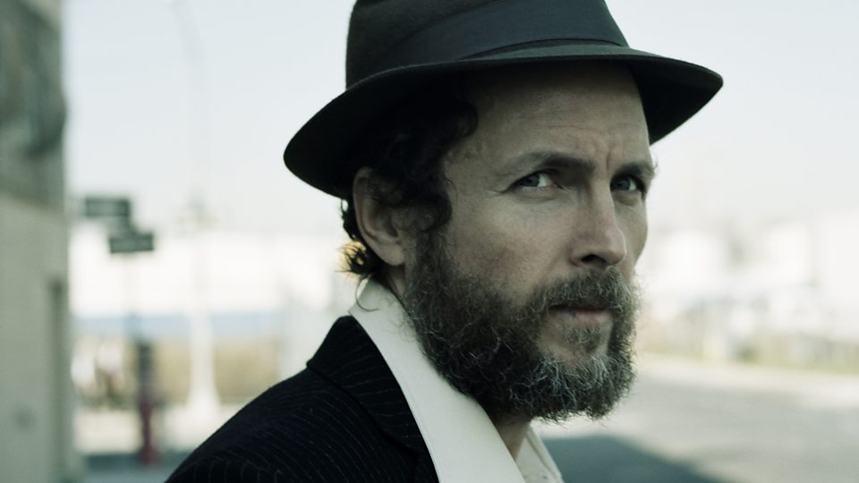

Lorenzo Cherubini (Italian pronunciation: [loˈrɛntso keruˈbiːni]; born 27 September 1966), better known as Jovanotti ([dʒovaˈnɔtti]), is an Italian singer-songwriter and rapper.

Partly recorded in South Africa, Lorenzo 1997: L'Albero unequivocally signaled Jovanotti's conversion into a global citizen. After spending most of the past two years traveling all over the world, and in particular Cuba, South America, Africa, the Middle East, and India, Jovanotti attempted to put his experiences into use and give his sound and ideas a world music makeover. The album's standout single, "Bella," a singalong to end all singalongs and a serious contender for best Jovanotti song ever, also showed that, for all of the new influences, his pop instincts remained as flawless as usual. A book recounting his travels, Il Grande Boh!, met with favorable reviews and excellent sales. More concise than the ambitious sprawl of L'Albero, Lorenzo 1999: Capo Horn contained the strongest set of pop songs of any Jovanotti album, including three unassailable singles: the to-die-for lullaby for his first baby girl "Per Te," the gorgeous "Stella Cometa," and the blissfully effervescent "Un Raggio di Sole."